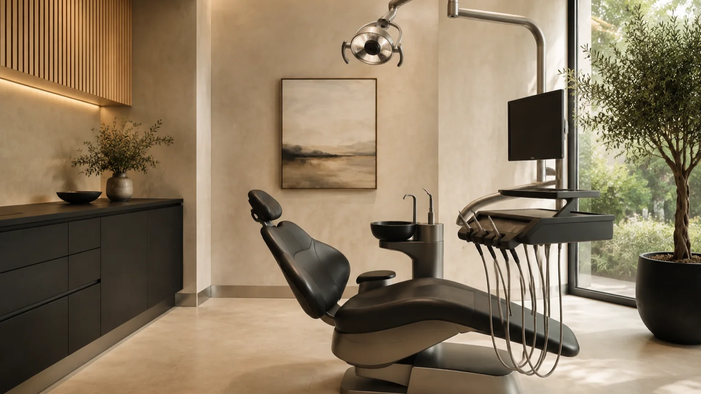
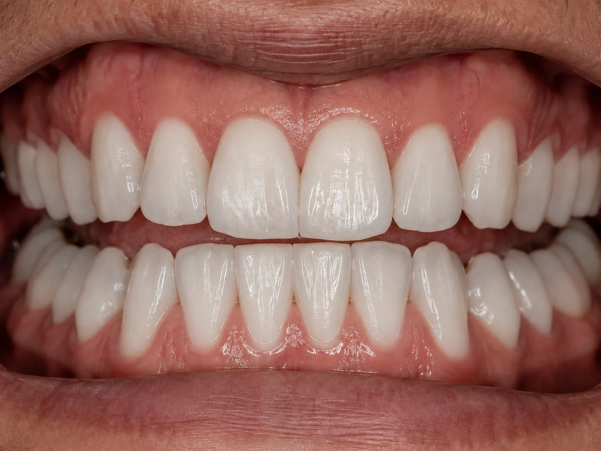
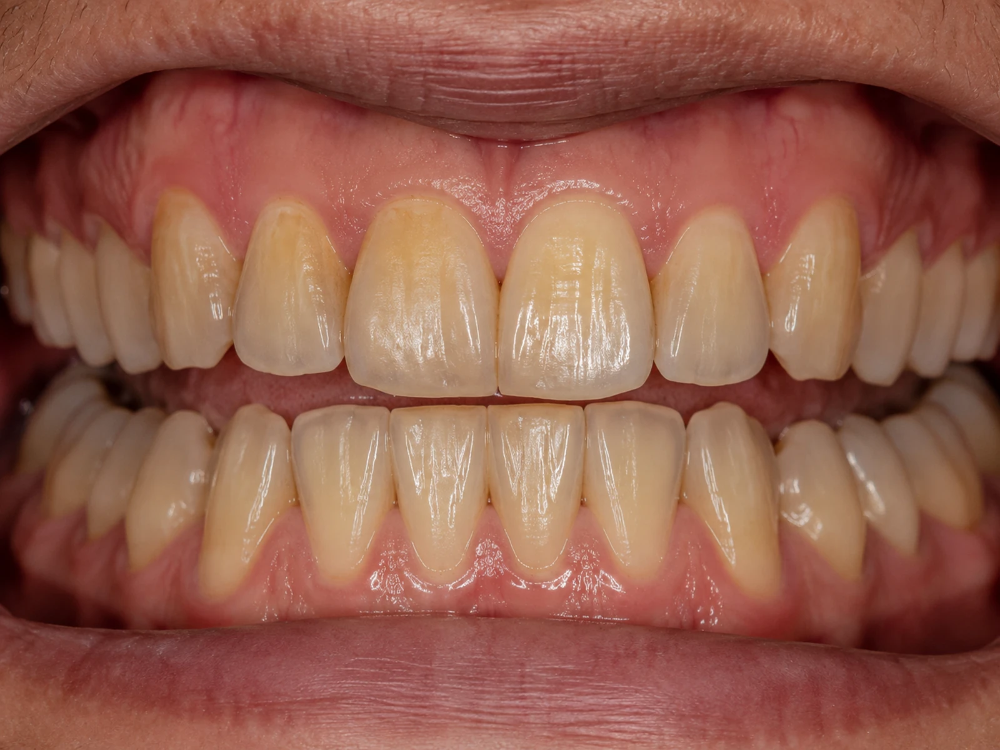
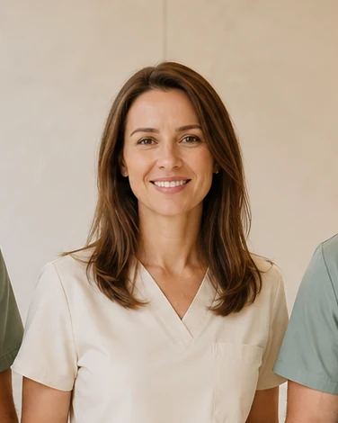
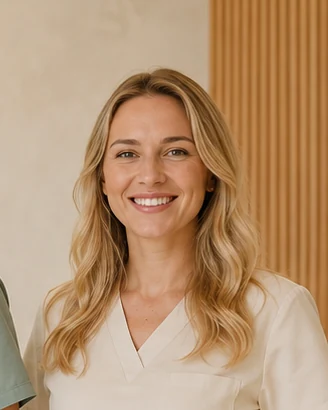
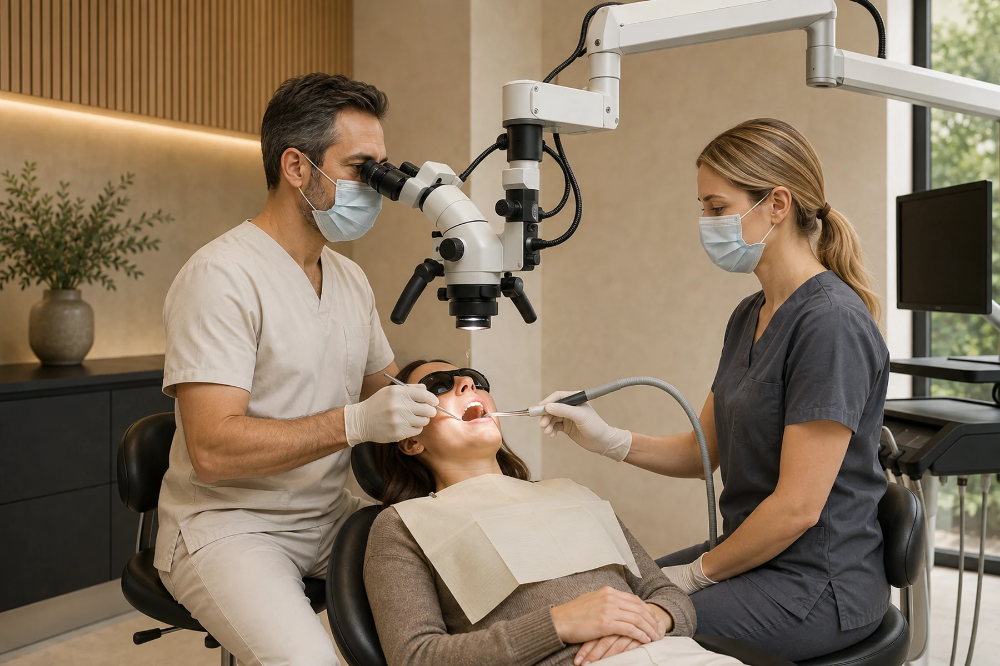
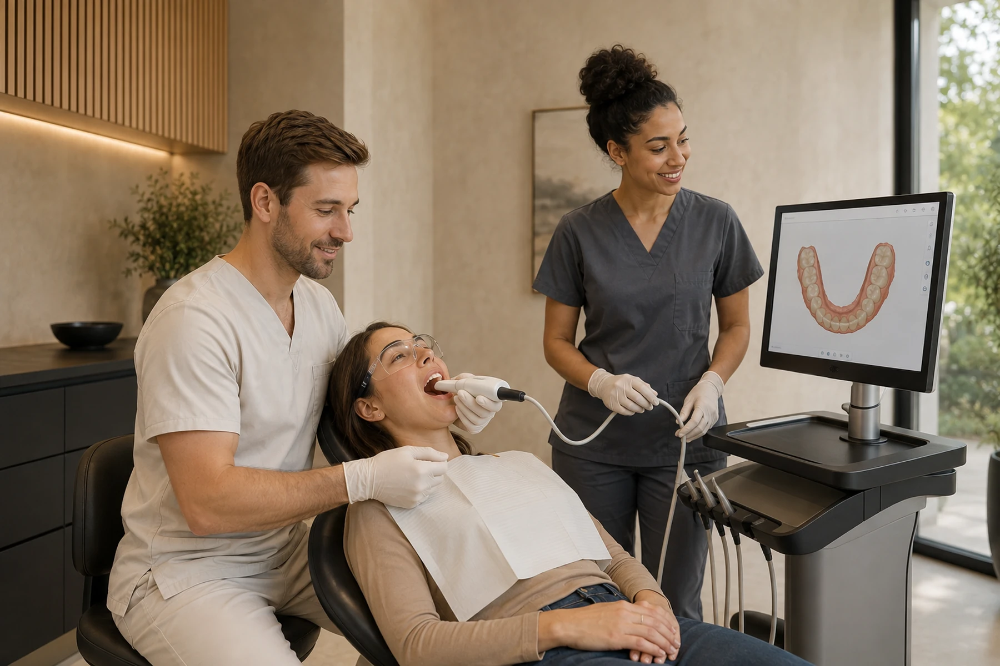
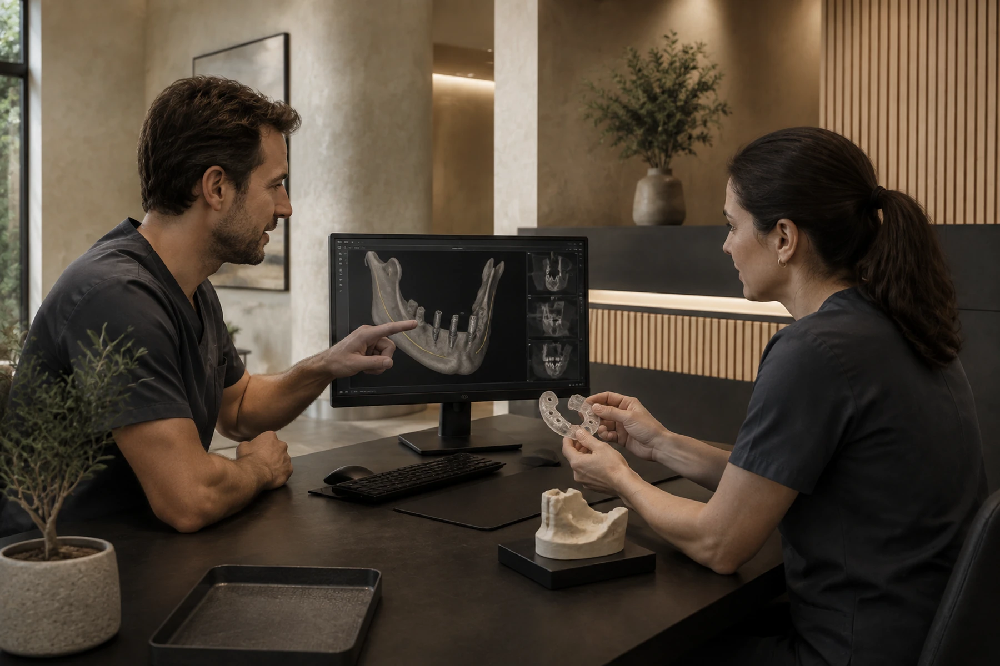

MEDIC · PROFIL DEMO
MEDIC · PROFIL DEMODr. Andrei Popescu
Implantologie & chirurgie orală
Planificare digitală · Reabilitare orală

STOMATOLOGIE MODERNĂ · HUNEDOARA
Stomatologie modernă, tehnologie precisă și o echipă care pune confortul tău pe primul loc.
ani experiență
specialiști în echipă
Tehnologie digitală
Tratamente complete
TOTUL ÎNTR-UN SINGUR LOC
De la prevenție la reabilitări complexe, fiecare tratament face parte dintr-un plan gândit pentru tine.

Reconstruim funcția și estetica zâmbetului folosind planificare modernă și soluții adaptate fiecărui caz.

Albire și restaurări atent planificate, în armonie cu trăsăturile tale și sănătatea dinților.

Aparate dentare și un plan de tratament care urmărește echilibrul dintre funcție și estetică.

Tratamente de canal realizate cu atenție la detalii, cu ajutorul microscopului dentar.
Consultații, prevenție și tratamentul cariilor, pentru o bază sănătoasă a zâmbetului.
de la 120 leiCoroane și lucrări protetice alese în funcție de nevoile funcționale și estetice.
de la 550 leiEvaluare atentă, intervenții planificate și îndrumare pentru perioada de recuperare.
de la 190 leiEvaluarea și îngrijirea țesuturilor care susțin dinții, cu un plan personalizat.
Tarif stabilit la consultațieVizite adaptate copiilor, cu răbdare, explicații simple și atenție pentru prevenție.
Tarif stabilit la consultațieInvestigații imagistice recomandate în funcție de nevoia clinică și diagnosticul urmărit.
de la 40 leiIMPLANTOLOGIE LUMEN
Privim imaginea de ansamblu înainte să ne concentrăm pe detalii. Pentru o soluție potrivită ție, de la prima discuție.
REZULTATE · SIMULĂRI DEMONSTRATIVE
Fiecare caz începe cu o poveste. Fiecare plan, cu o persoană.


Estetică dentară · 2 săptămâni — scenariu ilustrativ
Fotografiile sunt demonstrative. Rezultatele tratamentelor diferă de la pacient la pacient.
ÎN SPATELE FIECĂRUI ZÂMBET
Cinci personalități. Aceeași grijă pentru tine. Profiluri fictive, create pentru acest concept.
MEDIC · PROFIL DEMOImplantologie & chirurgie orală
Planificare digitală · Reabilitare orală

MEDIC · PROFIL DEMOEstetică dentară & protetică
Estetică naturală · Restaurări dentare
Ortodonție
Echilibru funcțional · Aliniere dentară
Asistent medical
Grijă · Organizare · Confort

ASISTENT · PROFIL DEMOAsistent medical
Sprijin · Comunicare · Atenție
TEHNOLOGIE CU SENS
Mai multă claritate pentru medic. Un plan mai ușor de înțeles pentru tine.
Diagnostic rapid, direct în clinică. Investigații recomandate atunci când sunt necesare.


Precizie sporită pentru tratamente complexe.

Tratamentul începe înainte de prima intervenție.

O experiență calmă, cu timp pentru întrebările tale.
EXPERIENȚA LUMEN · RECENZII FICTIVE
UN ÎNCEPUT BUN
Spune-ne cu ce te putem ajuta, iar noi te contactăm pentru confirmarea programării.